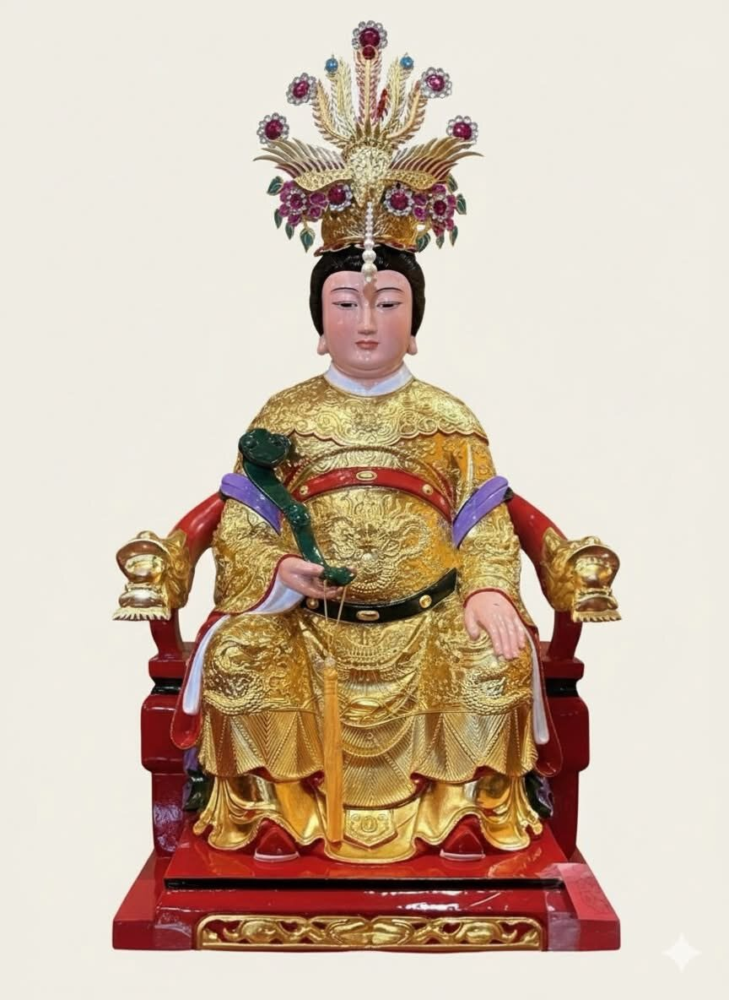
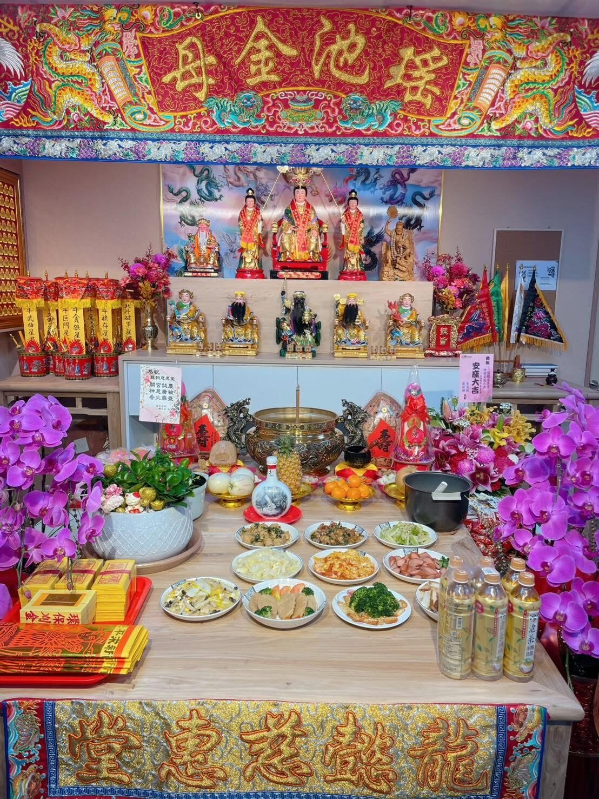

ONLINE FORTUNE
抽籤後，立即看籤詩
默念一件想請示的事，按下抽籤按鈕，籤號、籤詩和解說會立刻顯示。擲筊是可略過的隨機體驗，不會擋住籤詩。
線上求籤
① 默念一件事 ② 按下抽籤 ③ 直接看下方籤詩與解說
請先靜心
按下抽籤後，結果會立刻顯示在下方。
擲筊為選用體驗，可略過；抽到的籤詩不需要等擲筊才會顯示。
一二三
尚未抽籤
本頁擲筊結果由瀏覽器隨機產生，僅供體驗，不是實際筊杯或神明指示。

瑤池金母龍懿慈惠堂恭奉聖像
THE 60 LOTS
六十甲子籤詩
輸入籤號或干支查閱籤詩與解說。不同宮廟籤本可能有異文，請以實際求籤處版本為準。
也可以直接選擇籤號
LONGYI TEMPLE
龍懿慈惠堂
以誠敬之心親近信仰，也以平常心看待籤詩。籤文可作為自我省思與整理方向的參考；面對人生重要決定，仍請蒐集資訊並審慎判斷。
本網站為線上文化體驗，非即時問事或正式廟務服務。疾病、法律、投資及其他重大事項，請另向合格專業人士諮詢。
